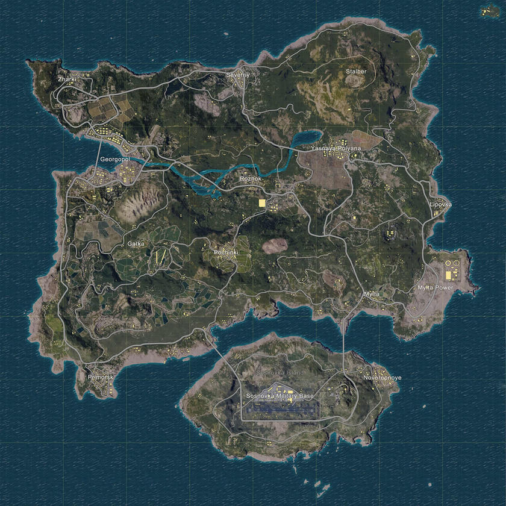
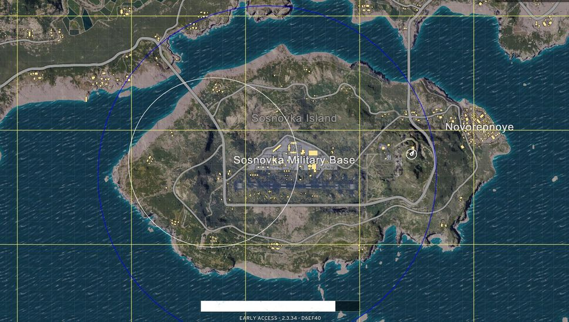
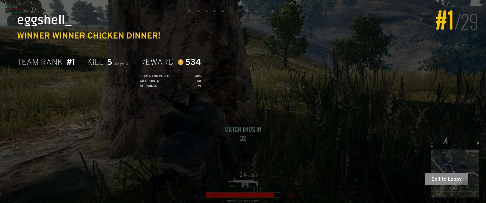
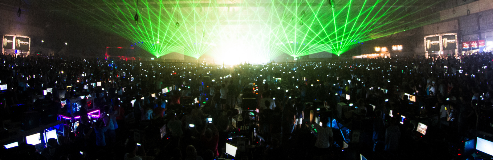
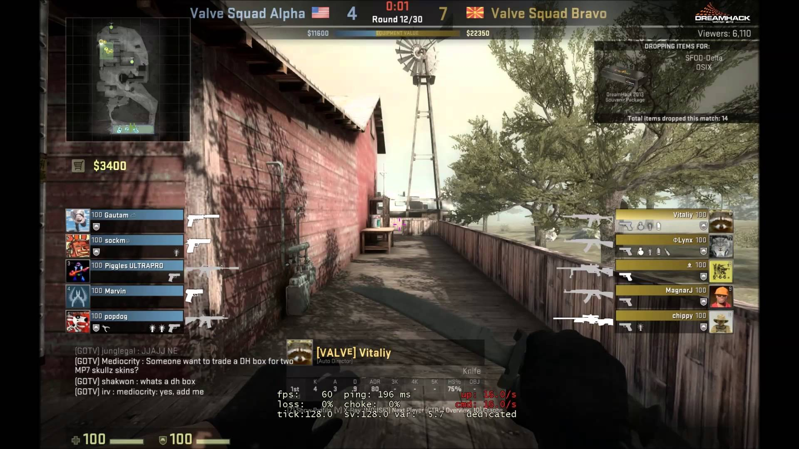
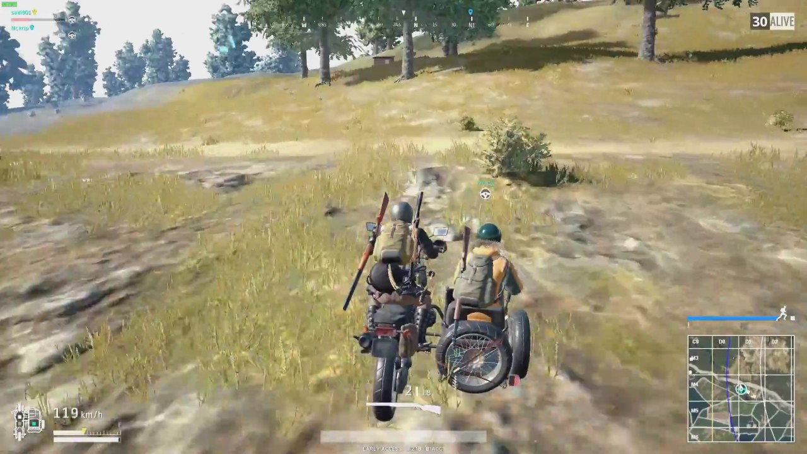
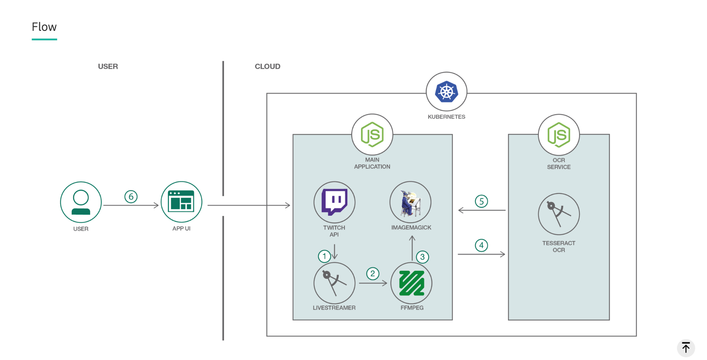

Showoff Menu
Close
Press ? for help.
All features are anonymous.
Press ? for help.
All features are anonymous.
Applying Object Character Recognition and Kubernetes to Twitch
Cullen Taylor // IBM

We write some hacks, and some of them become standards. This is the history of software engineering.
Andrey Sibirev (@kobolog) - Dropbox
NOTE: If you have questions, feel free to interrupt!
Time for a Crash Course
in Battle Royale



The Idea
...or how your project starts as a shell script



Alright, enough storytime!
Let's dive into the app.

request(options, function(error, response, body) {
if (body === undefined || body === null) {
log.error("No response from Twitch.");
if (error) {
log.error(" " + error);
}
return Array([]);
}
if (error) log.error("error:", error);
log.info("statusCode:", response.statusCode);
bodyJSON = JSON.parse(body);
allAgesStreams = bodyJSON.streams.filter(function(d) {
return d.channel.mature === false;
});
usernameList = allAgesStreams.map(function(d) {
return d.channel["display_name"];
});
log.info(usernameList);
return callback(usernameList);
});
endWe write some hacks, and some of them become standards. This is the history of software engineering.
Andrey Sibirev (@kobolog) - Dropbox
function recordStream(options) {
return new Promise((resolve, reject) => {
log.info("recording clip of stream: " + options.streamName);
const child = spawn("livestreamer", ["--yes-run-as-root", "-Q", "-f",
"--twitch-oauth-token", process.env.token,
"twitch.tv/" + options.streamName, "720p", "-o",
options.clipsDir + options.streamName + ".mp4"]);
setTimeout(function() {
child.kill("SIGINT");
log.info("recorded stream: " + options.streamName);
resolve(options);
}, 4000);
});
}
endfunction takeScreenshot(options) {
return new Promise((resolve, reject) => {
if (fs.existsSync(options.clipsDir + options.streamName + ".mp4")) {
log.info("taking screenshot of stream: " + options.streamName);
new FFMpeg(options.clipsDir + options.streamName + ".mp4")
.takeScreenshots({
timestamps: [0],
folder: options.thumbnailsDir,
filename: options.streamName + ".png",
})
.on("end", function() {
resolve(options);
})
.on("error", function(err) {
fs.unlinkSync(options.clipsDir + options.streamName + ".mp4");
log.info("Deleted " + options.clipsDir
+ options.streamName + ".mp4");
reject(new Error("An error occurred: " + err.message));
});
} else {
reject(new Error("File " + options.clipsDir
+ options.streamName + ".mp4 not found."));
}
});
}
endfunction cropScreenshot(options) {
return new Promise((resolve, reject) => {
log.info("cropping screenshot of stream: " + options.streamName);
if (fs.existsSync(options.thumbnailsDir + options.streamName + ".png")) {
gm(options.thumbnailsDir + options.streamName + ".png")
.crop(22, 22, 1190, 20)
.type("Grayscale")
.write(options.cropsDir + options.streamName + ".png", function(err) {
resolve(options);
if (err) reject(err);
});
log.info("cropped screenshot of: " + options.streamName);
} else {
reject(new Error(options.streamName + ": input file not found"));
}
});
}
endfunction ocrCroppedShot(options) {
return new Promise((resolve, reject) => {
let formData = {
image: fs.createReadStream(__dirname
+ options.cropsDir.replace(".", "")
+ options.streamName + ".png"),
};
let requestOptions = {
url: "http://" + process.env.ROTISSERIE_OCR_SERVICE_HOST + ":" + process.env.ROTISSERIE_OCR_SERVICE_PORT + "/process_pubg",
formData: formData,
};
request.post(requestOptions, function(err, httpResponse, body) {
if (err) {
console.error("upload failed");
reject(err);
} else {
let parsed = JSON.parse(body);
let object = {};
object.name = options.streamName;
object.alive = parsed.number;
resolve(object);
}
});
});
}
endDeploying the app with Kubernetes.
hopefully there's time for this...
imageRepository: registry.ng.bluemix.net/rotisserie
imageTag: bac5a0c
ingress:
hostnames:
- someURL.biz
- www.someURL.biz
secrets:
token: YOUR_TWITCH_TOKEN_IN_BASE64
clientID: YOUR_CLIENTID_IN_BASE_64
certManager:
email: mctaylor@us.ibm.com
url: https://acme-v01.api.letsencrypt.org/directory$ helm install ~/src/rotisserie/helm/rotisserie
$ kubectl get pod
NAME READY STATUS RESTARTS AGE
fortnite-prte-prod-rotisserie-ocr-6bf88d6c4d-lstfw 1/1 Running 0 50d
fortnite-prod-rotisserie-static-865d955b78-jsbqw 1/1 Running 0 50d
logdna-agent-4cqgd 1/1 Running 1 34d
logdna-agent-krmfj 1/1 Running 0 34d
logdna-agent-lj9hx 1/1 Running 1 34d
rotisserie-dev-app-586dc9b775-vtl9v 1/1 Running 5 48d
rotisserie-dev-ocr-6b58f8d75f-n7jz8 1/1 Running 1 48d
rotisserie-dev-static-65fb9c4dc-b4ct7 1/1 Running 1 48d
rotisserie-prod-app-6c7b9984c5-blrbp 1/1 Running 9 55d
rotisserie-prod-ocr-6bbd96788c-k6hkv 1/1 Running 1 55d
rotisserie-prod-static-86f6c59779-jqrfc 1/1 Running 1 55d
Questions?